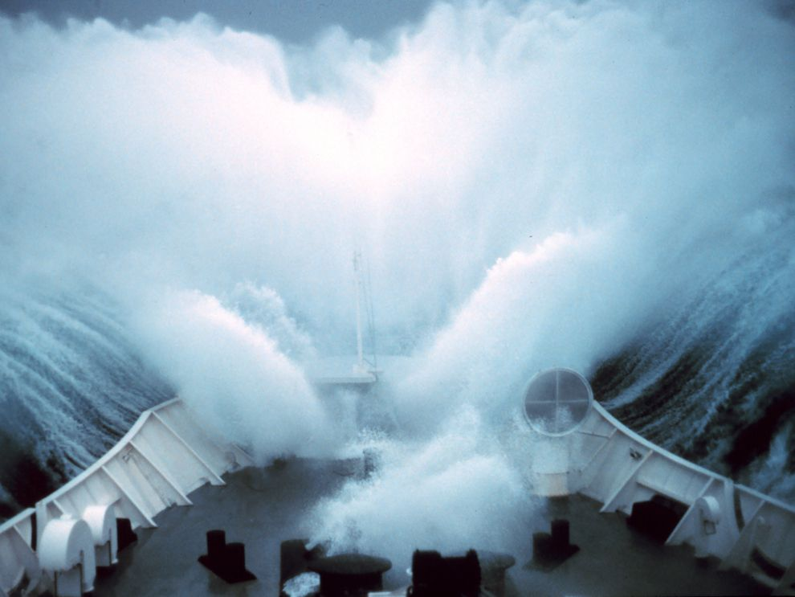
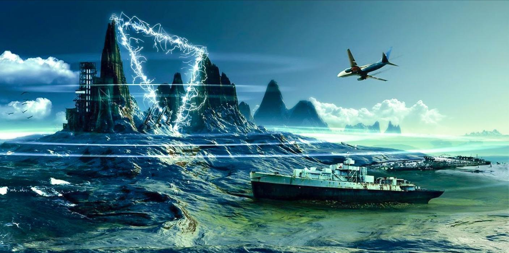
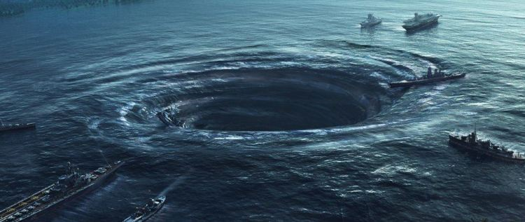

Conspiracy Theories
- Freak Waves:
The occuring of freak waves is a possibility that it is the cause of multiple disappearances of the Bermuda Triangle. After all, freak waves can appear at sudden moments, despite having a calm sea. Research shows that freak waves have the ability to be up to 30m high and are capable of sinking a large ship within moments. Although freak waves are a rare orrcurance, there are certain areas of the ocean that indicate that they happen more often than normal.


- The Lost City of Atlantis
One explanation is based on the mythological city of Atlantis and the technology they left behind, which were quite advanced. The legend says that the city of Atlantis heavily depended on special enerygy crystals. These crystals were told to be extremely powerful. They radiated large amounts of energy (also known as death rays), which caused the navigationals systems of passing ships and airplanes to malfunction. This resulted to being lost at sea, or just completely destroyed by the energy.

Why my explanation is correct:
There is evidence that whirlpools and blue holes occur in the Bermuda Triangle, which is the reason why disappearances in the Bermuda Triangle are so common. For example, there has been notice of these occurances in the Bahamas, which is located at the western corner of the Bermuda Triangle and about 50 miles off the coast of Florida. Divers have also discovered many lateral tunnels that have been created from the walls of the blue hole. These run for miles in different directions.
